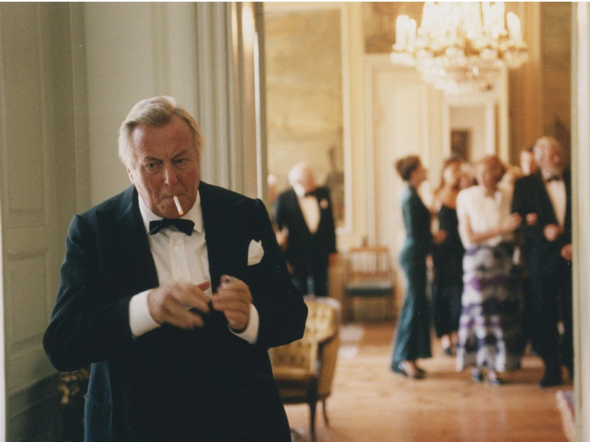
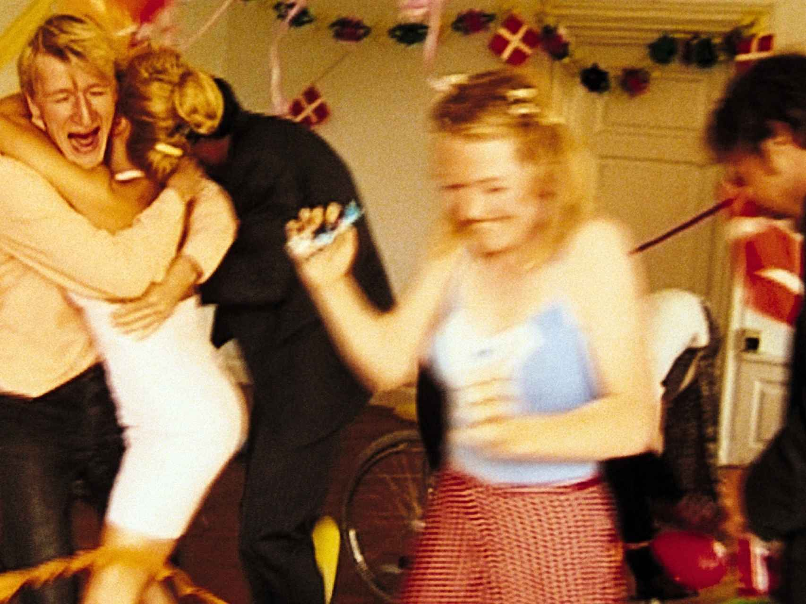
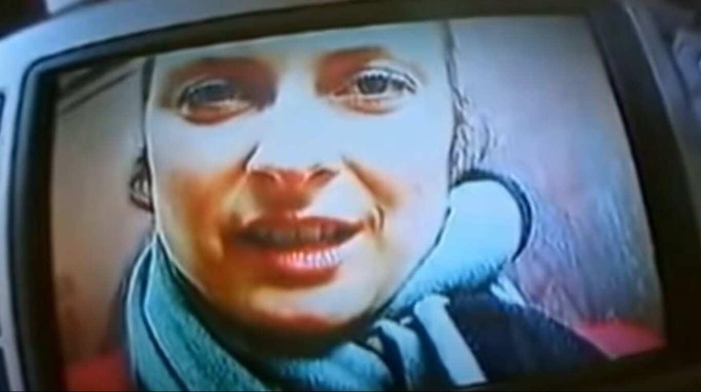

El Dogma 95 fue un movimiento cinematográfico que buscó volver a las raíces del séptimo arte, depojándose de todo y aferrándose a la máxima de que para hacer una película solo se necesita una cámara, un grupo de actores y un guion poderoso. La mayor parte de sus representantes eran artistas daneses, pero este gueto de directores tenía algo en común más allá de su tierra: una aberración hacia el sistema hollywoodense de las superproducciones. Para afirmar su posición, el movimiento encabezado por Lars Von Trier y Thomas Vinterberg redactó un manifiesto tal como lo hicieron vanguardias históricas como el dadaísmo y el surrealismo. Se trató de un ejercicio combativo que le declaró la guerra al realismo artificial que atraviesa al espectador y lo sensibiliza.
- Los rodajes tienen que ser en locaciones reales y no en sets de filmación.
- El sonido y la imagen no pueden mezclarse por separados.
- Cámara en mano.
- No usar luces artificiales ni efecto blanco y negro.
- Prohibidos los efectos ópticos y filtros.
- La película no puede tener una acción o desarrollo superficial.
- Línea temporal: aquí y ahora.
- No se permiten películas que correspondan a un género específico.
- 35 mm.
- El director no puede aparecer en los títulos.
Las películas del Dogma 95 se oponían a los universos prefabricados y a la artificialidad de la ficción. Con una cámara al hombro, nada de trípode ni steady cams, el énfasis estaba puesto en la potencia del guion y su interpretación. Así comenzaron a salir, a finales de los 90 y principios del 2000, una serie de películas que descolocó a gran parte de la cinefilia. Como sucedió con el punk en la música, en el cine el Dogma no buscaba ser querido en su totalidad. Se trató de una de las últimas revueltas en el cine, como pasó en los 60 con la Nouvelle Vague en Francia, la Nueva Ola Checoslovaca, el Cinema Novo en Brasil o en Estados Unidos el llamado New American Cinema. Cuando un grupo de directores juntan fuerzas para exponer un fin en común, siempre se genera con un rechazo a la forma dialéctica predominante.

Las películas que integraban el Dogma 95 eran de lo más variadas en temáticas. Si bien una de las reglas era no hacer películas de género, se las tenía que distinguir por ciertos tamices. Pero si se presta atención, todas las películas rompen con algún ítem del manifiesto, porque el sentimiento más punk del movimiento es que toda regla existe para romperla, incluso las promulgadas por ellos mismos. Un film contemporáneo que intentó pertenecer al Dogma 95 y no fue autorizado por sus representantes, fue El Proyecto Blair Witch (1999). A pesar de que cumplía con todos sus requisitos técnicos, la excusa de su rebote fue por, supuestamente, su género. Para esto, se creó la mayor contradicción de la filosofía del Dogma 95, que fueron los certificados de autentificación al comienzo de cada película. El movimiento había nacido para demostrarle al mundo una forma diferente de hacer películas, pero se encerraron una vez que se encontraron con que todo el mundo podía hacer una película Dogma. La contradicción estuvo en alardear algo popular y luego institucionalizarse.
Entre las películas del movimiento danés, hubo algunas que pertenecían a otros países e incluso varias del “territorio enemigo”, que tenían como karma ser nacionalmente juzgadas por el cine independiente mundial por ser estadounidenses. Pero las películas yanquis que recibieron el diploma son cien por ciento Dogma por su lucha interna frente a la industria. Frente a este dilema, podemos tomar dos películas del Dogma en las que sucede algo similar: Amerikana (2001) de James Merendino y The Bread Basket (2002) de Matthew Biancniello. Por un lado, cuando en Amerikana una chica sale a la calle, vemos que no se trata cualquier calle sino que vemos en el fondo las letras blancas de “Hollywood”, pero la película escapa de esa zona con un gesto casi metafórico al recorrer las rutas del país en una road movie. Por otro lado, en The Bread Basket, el único mediometraje considerado por el Dogma 95, un personaje corre cansado por una montaña, llega al lugar de las letras gigantes de Hollywood y luego desciende. Ambas películas se burlan de su libertad y bailan frente la insignia del monstruo industrial cinematográfico.
El aclamado director de cine independiente estadounidense, Harmony Korine, aprovechó el surgimiento del Dogma para mostrar su lado más oscuro con Julien Donkey Boy (1999). Con un elenco de lujo que aprovechaba los ojos de la crítica en el cine under, convocó a Spud (Ewen Bremmer) de Trainspotting (1996) y al cineasta alemán Werner Herzog, un referente de correr riesgos a la hora de rodar una película. Según Korine, Herzog fue su influencia más grande desde que vio su película También los enanos empezaron pequeños (1970), un film con un sentimiento anarco como así lo propuso luego Korine en Trash Humpers (2009). Pero la única certificada por el movimiento fue Julien Donkey Boy, cruda en forma y fondo, antimoral y con un final que revuelve el estómago.
Lars Von Trier fue la voz primordial de este movimiento y fue con su película Los idiotas (1998) que salió a promulgar esta ideología rupturista. Los idiotas es una película polémica por donde se la mire, si bien el nombre de Von Trier se haya vuelto sinónimo de controversial. Los idiotas ataca por todos lados: sus recursos técnicos y su temática buscan incomodar no solo al espectador sino también a quienes profesan la prolijidad como una forma estética de narración. La película muestra a un grupo de personas que disfrutan de hacerse pasar por deficientes mentales para sacarle provecho y exponer un experimento social que saca de sí los aspectos más bestiales de nuestras emociones, sin dejar atrás una mirada política. Otra película danesa muy importante del movimiento fue Corazones abiertos (2002), en diálogo con una de las películas anteriores al Dogma dirigida por Lars Von Trier, Rompiendo las olas (1996). Ambas obras cuentan una historia de amor atravesada por la tragedia y la parálisis. Por su parte, Thomas Vinterberg dirigió una de las películas más conocidas del Dogma, La celebración (1998), que descascara la aristocracia y saca a la luz lo más sucio que esconde el lujo.
El cine de Dinamarca floreció con esta corriente y aparecieron películas que no tuvieron el reconocimiento merecido, como Mifune (1999) o Simplemente humano (2001). Historias que como las de Lars Von Trier y Harmony Korine, se interesaron en personajes que mostraban otro tipo de comportamientos. Tampoco hay que olvidar a The King is Alive (2001), inspirada en el texto de Sheakespeare pero insertada en el medio de un desierto y el calor inhumano. Y también existieron retratos familiares como Arven (2002) y otras más felices como Italiano para principiantes (2000). El Dogma 95 se empezó a expandir a diferentes países encontrando interesados que les agraden, como el español Juan Pinzás siendo el único director con una trilogía Dogma: Era Outra Vez (2000), Días de boda (2002) y El desenlace (2005).
La problemática de la inmigración fue retratada en la película francesa Lovers (1999), donde un joven yugoslavo se rehúsa a ser deportado para quedarse en la ciudad donde conoció a su verdadero amor. Y el cine argentino también tiene su película Dogma 95, quizás sea el ejemplo más extravagante de todas: Fuckland (2000). Se trata de una película clandestina sin guion, sino sólo una intención experimental que desborda cualquier ficción. ¿Cómo hacer una película a escondidas en tierras enemigas? El personaje y director viaja a las Islas Malvinas y lleva consigo a todas partes su cámara. Por momentos tiene prohibido filmar pero igual lo hace, para mostrar el territorio inglés ganado en la guerra de 1982, cómo la gente vive hoy y cómo los soldados están por todo el lugar. Pero Fuckland no busca la forma documental de informar, sino solo la de filmar, ya que el interés del director pasa por acumular horas de registro y contar una historia absurda de “cómo recuperar las Islas Malvinas” a través del montaje. Sin equipo técnico, solo el interés de una cámara de infiltrarse en la realidad y modificarla.
Cuando hoy se cuenta la historia del cine y se piensa en Dinamarca, no nos quedamos solo con la sutileza y preponderancia de Carl Th. Dreyer, sino también con este grupo rebelde que reivindicaron sus propias reglas del cine. Pero la bomba del Dogma se explotó en sus propias caras. Con el tiempo, Von Trier y Vinterberg pusieron fin al proyecto, ya que aparecieron demasiadas películas que podían pertenecer Dogma. Pero en la frustración del movimiento, resalta lo importante que es el germen puesto. En un mundo en donde brillan las estrellas por las luces y los efectos, no se hay que olvidar que el cine sigue siendo emociones contadas con una cámara. Una visión que puede prescindir de los lujos y arrematar la fuerza de una historia con una potencia vital que mueve el piso del entretenimiento a favor del cine de autor.